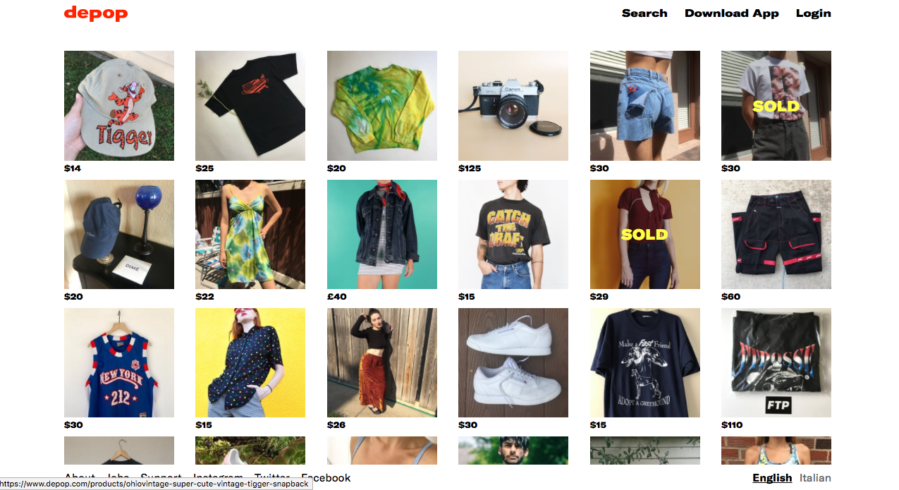
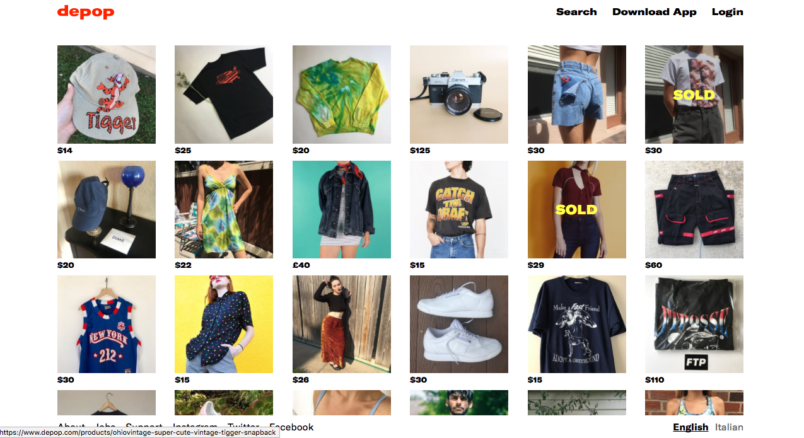

FAST FASHION
Becoming mindful about an everyday choice.
Shopping in a Fast-Paced Industry
I am familiar with my role as the consumer. Eagerly flipping through brightly colored catalogs, compiling coupons, and squeezing into the back seat of the family mini van as it cruised toward the nearest shopping center. Shopping became a weekend activity. From a matching tracksuit embroidered with logos to earring sets including a pair for each day of the week, each purchase fed into my personal wardrobe, a collection of items that adjusted with each phase, trend, and fad. Deciding what to wear became a choice, one that allowed me to express who I was at each point of my life.
Unfortunately, this constant closet refresh has wired me to brush aside questions that I have had about my relationship with clothing and the sustainability of my buying patterns.
Where do old clothes go? Why do I never seem to have enough?
Buying into Your First Impression
Clothing, in its most basic sense, functions as an outermost covering. However, with the development of society and social networking, it seems that modern human beings have come to expect much more from what may have been first created as a response to the loss of archaic body hair. In a YouTube post titled “Shopping for a New Version of You,” a simple skit points to a profound truth about the underlying rationale behind each purchase: buyers recognize that material items, when bought and worn, play into a perceived identity.As a result of our intelligence, we are able to comprehend concepts like beauty, value, and identity.
The hides and skins that once protected us against the natural elements have evolved into indicators of social echelons and perhaps even our personalities. One job applicant in a well-tailored suit may appear more qualified than another applicant in a standardized small, medium, or large that ran larger than expected.
Because heuristics allow us all to make quick decisions with minimal effort, first impressions based on outward appearances matter and permanent online posts have come to mean much more.
How Fast Fashion Got Its Start
Social media platforms have widened our circles by increasing visual exposure. A socially active individual today is exposed to a larger audience than an older counterpart. The observation that we have more facebook friends than the number of people we see face-to-face on daily basis supports this idea.
Family members who lived under the same roof and neighbors who lived nearby were once the only people who saw what an individual wore on a day-to-day basis, and what every respected young woman wore in one city could not have possibly mattered to other young women across the country.
Thus, the production of high quality basics that could be passed down from one sibling to the next made sense and consumers could easily weigh the longevity of a well-made item over any passing fad.
Mobile devices have reached the palms of [number] since [time], resulting in higher volumes of more frequent media posts. Automatic page refreshing and the desire to be up to speed have hooked users onto an image-saturated culture that demands constant interaction by both producers and consumers.
As Olivia Tan put it, “social media encourages the mentality that once an outfit or item is shared with the public, it can never be worn again and photographed.”
If a page requires more than three seconds to refresh and unveil new content, the user detects delay. Similarly, both companies and consumers have come to expect new clothing lines each month. The original four seasons of the fashion industry have now become eleven to fifteen delivery dates.
Presenting consumers with “something new” gives them a reason to buy. Lowering standards of quality also gives consumers a reason to buy.
By opting for shorter staple cotton and chasing after dirt cheap labor from Vietnam to Bangladesh, companies knowingly create “constant dissatisfaction” over products that do not hold up as well as they once did.
Pulling out the sewing machine for a quick repair is no longer the logical solution to a loosening seam.
Pilling sweaters are now replaced without hesitation.
“Marketing has shifted from tricking the customer to blaming the customer to satisfying the customer—and now to integrating the customer systematically . . .It is marketing that is oriented toward creating rather than controlling a market.”
An item is pumped out of the factory, pops up on platform feeds, reaches the pinnacle of its life at trending status, and is either sent to a landfill to take up space or to a developing country to disrupt local markets.
The positive feelings of inclusivity and praise that arise from keeping up with what’s new creates the fear of missing out and urges the consumer to purchase items at a higher volume, to buy impulsively, and to overlook ethical and environmental implications.
A psychological tunnel vision is created as lower price tags and newer product lines become the only priorities.
Donate clothing to local organizations
Donating clothes to developing countries often disrupts local markets. For instance, rather than purchasing a pair of shoes from a local vendor for $7, consumers in these countries may buy secondhand shoes that have been shipped from the United States for $3. As a result, local vendors may lower their prices in order to make the sales necessary to support optimal living conditions.
Upon placing your donation into a bin hanging around a nearby parking lot, it becomes difficult to track where your donation ends up. In order to get rid of unwanted clothing and to ensure that use comes out of items that you have paid good money for, donating to local organizations like a women's home, an adult daycare center, or a non-profit thrift shop ensures that someone in need of clothing receives your donation or that the money earned from its resale is donated. Your old suit may continue its life in someone else's closet without any unforeseen harm done.
Rosie's Place and Dress for Success are two non-profits in the Boston area that put donations into direct use.
Boomerangs, operated by the AIDS Action Committee, and Goodwill Stores both donate portions of their proceeds.
Buy and sell secondhand clothing.
From the comfort of you own home, sites including Poshmark, ThredUp, Depop can connect you with lightly worn and even mint condition items that have been sitting unworn in closets around the country.
 

Try a capsule wardrobe.
Creating a capsule with basics that you already creates a functional foundation that encourages you to wear pieces more often and more creatively. Perhaps, layering a sweater over a button-down shirt or pairing that same sweater with a skirt are two outfits that you never would have thought up before. Working from fewer pieces may leave you less overwhelmed with quantity and more focused on getting more wear out of less.